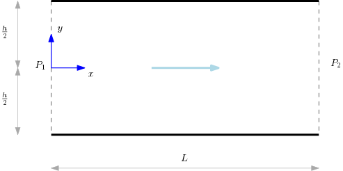
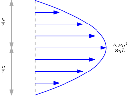

Elementary fluid dynamics
As a simple application of the constitutive theory developed so far, let us look into a special class of fluids called Newtonian fluids. This will result in the famous Navier-Stokes equation in fluid dynamics. This will be followed by a simple example, called Poiseuille flow, to illustrate how it all comes together.
Newtonian viscous fluids
Let us now consider the special case of a constitutive relation of the form We saw in our previous discussin of constitutive models that this form of the constitutive model is objective provided the function $\mathcal{F}$ satisfies the constraint, for every . It can be shonw that the most general form of $\mathcal{F}$ that is compatible with this constraint has the following structure, where $a_0, a_1, a_2$ are constants. A material whose constitutive relation of this form is called a non-Newtonian fluid, or a Reiner-Rivlin fluid.
As a special case of a Reiner-Rivlin fluid, let us consider the case of a linear viscous fluid, also called a Newtonian viscous fluid, which is characterized by a constitutive relation of the form where $\lambda,\mu$ are positive constants, and $p(\rho)$ is a function of the density called the pressure of the fluid.
Let us see how the mass and momentum balance equations change as a consequence of this constituive assumption. The mass continuity equation remains unchanged since it does not involve the Cauchy stress tensor. The linear momentum balance equation, on the other hand, takes the following form: This equation is called the Navier-Stokes equation, and plays a central role in continuum mechanics. Note that this equaiton, along with the mass continuity equation, provides a closed system of equations for the mass density $\rho$ and the spatial velocity $\mathsf{v}$. When supplied with the appropriate initial and boundary conditions, we can, in principle at least, solve the resulting set of partial differential equations.
Remark
In deriving the Navier-Stokes equation, we used the following result: This is most easily shown by taking recourse to a Cartesian coordinate system, as the following calculation illustrates: Subsituting this in the linear momentum balance equation yields the Navier-Stokes equation.
In the special case of an incompressible fluid, we can simplify the mass continuity equation as follows: It is easily checked that the Navier-Stokes equation for an incompressible fluid takes the following form: This equation, along with the incompressibility constraint, is known as the incompressible Navier-Stokes equation. Notice that the only unknown in this case is the velocity field.
Remark
Incompressibility is a very useful and satisfactory approximation for fluids whose flow speeds are much smaller than the speed of sound in that fluid. The study of incompressible fluids constitutes an important branch of fluid dynamics, but we will not explore this in any detail in this course.
Guess what!
Proving the existence of solutions for the incompressible Navier-Stokes equation is famously one of the Millenium Problems listed by the Clay Mathematics Institute; see this page for more details. You can become a millionaire and achieve a permanent place in the history of science if you crack this!
Poiseuille flow
Let us now look at simple example, called a Poiseuille flow, of an application of the theory developed so far. This will illustrate how everything that we have studied thus far comes together. The problem we will study is that of the steady flow of an inompressible Newtonian viscous fluid through a pipe of constant cross sectional area. The geometry of the flow is illustrated below:

As an idealization, we consider a two dimensional pipe of length and cross sectional width . Equivalently, this can be looked at as a a semi-infinite pipe with infinite extension along the out-of-plane direction. The steady flow in the pipe is caused by a pressure difference . Let us now see how to solve this problem using the incompressible Navier-Stokes equation.
What does this mean? Recall that the only unknown in this case is the velocity field. What we understand by a solution is the computation of the velocity field given all the information above. Let us start by writing out the mass and linear momentum balance equations for the steady state flow of an incompressible Newtonian viscous fluid: To solve these equations, we need to augment them with the appropriate initial and boundary conditions. In addition to the pressure being specified at the two ends of the pipe, we will also need the no-slip boundary condition on the walls for the velocity field. This cnidition requires that the velocity vanishes at the fluid-wall interface at .
Remark
The origin of the no-slip boundary condition lies in the details of the interaction between the fluid and wall particles, and cannot be obtained from purely thermodynamic considerations alone. For our purposes, it can be taken to be an experimental fact.
Let us now look at the velocity field. By symmetry, we do not expect any flow along the and directions. Thus, a general form of the velocity field for the present problem can be written as The incompressibility constraint, , implies that To get the incompressible Navier-Stokes equation for this case, note that Using these results in the incompressible Navier-Stokes equation, we get the following simple equation: The latter equations imply that the pressure is only a function of the variable. The former equation then tells us that the left hand side, namely , is just a function of , while the right hand side, namely , is a function of only. The only way this equation can be satisfied, therefore, is when the two are simultaneously equal to some constant, say : Solving the equation , along with the boundary conditions that the pressure at is and the pressure at is , yields the following: The remaining equation to be solved is subject to the no-slip boundary conditions, A straightforward computation yields the desired solution, As a consistency check, note that when . This simply states that there is no flow if there is no external pressure gradient to drive it. The velocity profile across the cross-section of the pipe is shown below:

The velocity profile is parabolic and vanishes at the walls of the pipe as required by the no-slip boundary conditions. Note also that the maximum velocity is attained at the center of the pipe.
Remark
The foregoing conclusion that the maximum flow velocity is at the center of the pipe is also true in the case of a Poiseuille flow in a circular pipe. The details are left as a simple exercise.